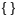

DITA Topic Document Type
Oxygen XML Web Author includes a variety of features that were designed specifically for DITA topic document types. Most of these features can be accessed through actions available on the DITA framework-specific toolbar or from the contextual menu.
DITA New Document Templates
Oxygen XML Web Author includes a variety of predefined new document templates that make it easy to create various types of DITA documents with some of the document structure already present. When you use the New button in the Dashboard for your particular file repository, a dialog box is displayed where you can choose from various types of new document templates, including many for DITA.
DITA Map Pane
Oxygen XML Web Author includes an expandable DITA Map pane
that presents a DITA map as a hierarchical tree. To open it, click the
 Show DITA Map
View toolbar button with a DITA topic open in the editor. Oxygen XML Web Author will automatically try to find the root DITA map for
the current document based upon recent history. If this is the first time the DITA topic has
been opened in Web Author or you want to change the map, you can use the browsing tool
(
Show DITA Map
View toolbar button with a DITA topic open in the editor. Oxygen XML Web Author will automatically try to find the root DITA map for
the current document based upon recent history. If this is the first time the DITA topic has
been opened in Web Author or you want to change the map, you can use the browsing tool
( ) at the top of the view to
select a new map. You can also specify the root map by using the
ditamap URL parameter.
) at the top of the view to
select a new map. You can also specify the root map by using the
ditamap URL parameter.
The name of the current DITA map is displayed in the gray stripe at the top of the view. The current map is also used to resolve the keys and references found in the current document open in the editor.
You can double-click (or single-tap on mobile devices) on the root map or any of the topics or submaps within its hierarchy to open the document in current browser tab. The documents are loaded in the main editing pane without reloading the entire web page. You can also select an item and press Enter to open it in the main editor (Ctrl + Double-Click or Ctrl + Enter opens the document in a new browser tab).
You can also drag items (such as topic references or key definitions) from the DITA Map view and drop them in the document open in the editor to insert a reference to the dragged item.
DITA Key Scopes
Oxygen XML Web Author supports key scopes. It allows you to reuse a topic in multiple places within the same DITA map, but with slightly different content in each instance. In Web Author, when opening a topic from the DITA Map view or directly from a DITA map open in the editor, keys in that topic will be resolved taking the key scopes of the location for the particular topic reference into account. Oxygen XML Web Author also supports a KeyscopeStack URL parameter.
DITA Validation
Oxygen XML Web Author automatically validates DITA documents as you type and presents warning messages in the Validation panel on the right side of the screen. Many of the DITA validation issues that are detected also include Quick Fix proposals to help you solve the problems. For more information about the validation support, see Validating XML Documents.
DITA Content Completion
Oxygen XML Web Author includes an inline content completion assistant to help you insert and manage DITA markup without having to take your fingers off the keyboard. By default, it appears when you press the Enter key and it offers proposals that are valid at the current location within the DITA document with the most logical choices listed first. Most proposals also include a description to help you understand exactly what the particular selection will do.
DITA CSS Styles
Oxygen XML Web Author has an option to adjust the rendering of documents simply by choosing from various styles. Each style is based on a corresponding CSS file stored in the built-in DITA framework. There are numerous different styles available for DITA documents. You can choose one main style and multiple additional styles that act as layers, with choices such as switching to a full-width mode, a print preview mode, or adding inline hints to help you understand the type of content that is expected within the DITA structure.
To select a CSS style, select Choose style from the
 More drop-down menu. This
opens a dialog box where you can select a main css style that applies to the
whole document and one or more alternate css styles that behave like layers and
are merged sequentially with the main style.
More drop-down menu. This
opens a dialog box where you can select a main css style that applies to the
whole document and one or more alternate css styles that behave like layers and
are merged sequentially with the main style.
DITA Toolbar Actions
The following default actions are readily available on the DITA toolbar when editing a DITA document in Oxygen XML Web Author:
- Show DITA
Map View
- Opens a DITA Map view on the left side of the screen that presents a DITA
map in a hierarchical tree-like manner. Oxygen XML Web Author will
automatically try to find the root DITA map for the current document
based upon recent history. You can also specify the root map
using the browsing tool ()
at the top of the view or by using the ditamap URL parameter.Note: If the root DITA map contains a subject scheme, the Attributes panel provides proposals for attribute values according to the definitions in the subject scheme map.
- Bold
- Surrounds the selected text with a
<b>(bold) tag.  Italic
Italic- Surrounds the selected text with an
<i>(italic) tag. - Underline
- Surrounds the selected text with a
<u>(underline) tag.  Link
Actions Drop-Down Menu
Link
Actions Drop-Down Menu-
The following link actions are available from this menu:
- Cross Reference
- Used to insert a cross reference link to a DITA resource. Selecting this option opens
a dialog box where you can select a target file and a target element (for any element in
the target file with an
@idattribute set). It inserts the target link as a DITA<xref>element and points to the target using the@hrefattribute. However, if the target reference is defined with a key, a@keyrefattribute is automatically inserted instead. The dialog box includes a preview pane so that you can see exactly what is being referenced. - File Reference
- Used to insert a link to a non-DITA file resource. Selecting this option opens a
dialog box where you can select a target file. It inserts the target link as a DITA
<xref>element and points to the target file using the@hrefattribute, and also inserts a@formatattribute and detects the appropriate value based on the type of resource. If the target reference is defined with a key, a@keyrefattribute is automatically inserted instead. - Web Link
- Used to insert a link to a web-related resource. Selecting this option opens a simple
dialog box where you can enter the URL of the target web link. It inserts the target
link as a DITA
<xref>element and points to the target URL using the@hrefattribute, and also inserts a@formatand@scopeattribute and detects the appropriate values (for example,format="html" scope="external"). If the target reference is defined with a key, a@keyrefattribute is automatically inserted instead.
 Insert
Image
Insert
Image- Opens a dialog box where you can browse for and select an image to be inserted into a DITA document at the cursor position. You can also drag an image file from another document, web page, or application (such as a system file browser) and drop it into your document (in some browsers, you can also use copy/paste actions).
- Insert Section Drop-Down Menu
-
The following insert actions are available from this menu:
 Insert Section
Insert Section- Inserts a new
<section>element in the document, depending on the current context.  Insert
Concept
Insert
Concept- Inserts a new
<concept>element, depending on the current context. Concepts provide background information that users must know before they can successfully work with a product or interface.  Insert Task
Insert Task- Inserts a new
<task>element, depending on the current context. Tasks are the main building blocks for task-oriented user assistance. They generally provide step-by-step instructions that will help a user to perform a task.  Insert Topic
Insert Topic- Inserts a new
<topic>element, depending on the current context. Topics are the basic units of DITA content and are usually organized around a single subject.  Insert Reference
Insert Reference- Inserts a new
<reference>element, depending on the current context. A reference is a top-level container for a reference topic.
 Insert
Paragraph
Insert
Paragraph- Inserts a new paragraph at the current cursor position.
- DITA Keys
- Opens a dialog box where all the keys defined in the current DITA map are collected.
You can filter the list or search for a specific key and you can insert links to
topics defined with a key or insert variables defined with a key. If the selected key
is defined point to an
@hrefvalue, it is inserted as a cross reference link (<xref>). If the selected key is defined with a<keyword>value, it is inserted as a variable reference (<ph>).  Reuse
Content
Reuse
Content-
This action opens a dialog box where you can select a target file and a target element (for any element in the target file with an
@idattribute set). It inserts the target as a DITA content reference (@conref). However, if the target reference is defined with a key, it is automatically inserted as a@conkeyrefinstead. The dialog box includes a preview pane so that you can see exactly what is being referenced.  Insert step or
list item
Insert step or
list item- Inserts a new list or step item in the current list type.
 Insert
Ordered List (Ctrl + Shift +
F7 (Command + Shift +
F7 on OSX))
Insert
Ordered List (Ctrl + Shift +
F7 (Command + Shift +
F7 on OSX))- Inserts an ordered list at the cursor position. A child list item is also automatically inserted by default. You can also use this action to convert selected paragraphs or an existing other type of list to an ordered list.
 Insert
Unordered List (Ctrl + Shift
+F8 (Command + Shift
+F8 on OSX))
Insert
Unordered List (Ctrl + Shift
+F8 (Command + Shift
+F8 on OSX))- Inserts an unordered list at the cursor position. A child list item is also automatically inserted by default. You can also use this action to convert selected paragraphs or an existing other type of list to an unordered list.
 Insert Table
Insert Table- Inserts a CALS table with a blank title at the current position.
- Insert Row Below
- Inserts a new table row with empty cells below the current row.
- Delete Row(s)
- Deletes the table row located at the cursor position or multiple rows in a selection.
- Insert Column After
- Inserts a new table column with empty cells after the current column.
- Delete Column(s)
- Deletes the table column located at the cursor position or multiple columns in a selection.
- Table Properties
- Opens a dialog box where you can configure various properties for the current table. For more information, see Editing Table Properties in DITA.
- Join Cells
- Merges the selected table cells.
- Split Cell
- Splits the selected table cell.
- Insert Special Character
- Opens a dialog box that allows you to select from a large variety of special characters to insert at the current cursor position. The various types of characters include symbols, emoticons, punctuation, and many more.
DITA Contextual Menu Actions
There are various DITA-specific actions that are available in the contextual menu when editing DITA documents in Oxygen XML Web Author:
 Add
Comment
Add
Comment- Allows you to insert a comment on a selected fragment of text. After you add a comment, the content where the comment was added is highlighted in the document and you can see the comment by hovering over the highlighted content or in the Review view.
 Edit Comment (Available when invoked on a
comment)
Edit Comment (Available when invoked on a
comment)- Opens the Edit Comment dialog box that allows you to edit the selected comment.
 Remove Comment (Available when invoked on a
comment)
Remove Comment (Available when invoked on a
comment)- Removes a selected comment.
 Edit
Attributes (Alt+Enter)
Edit
Attributes (Alt+Enter)- Opens the Attributes tab in the panel on the right side of the screen where you can add or edit attributes.
 Surround
With
Surround
With- Allows you to choose a tag to enclose selected content.
- Apply Image Map (Available when invoked on an image)
- This action applies an image map on the current image and opens the Image Map Editor dialog box. This feature allows you to create hyperlinks in specific areas of an image that will link to various destinations.
 Table submenu (Available when invoked on a table)
Table submenu (Available when invoked on a table)- Presents various actions for configuring the table, such as adding or deleting rows and columns, joining or splitting cells, and converting from a CALS table to a Simple table (and vice versa).
-
This submenu includes the following insert actions that are specific to the DITA framework:
- Insert Table
- Inserts a CALS table with a blank title at the current position.
- Insert
Image
- Opens a dialog box where you can browse for and select an image to be inserted into a DITA document at the cursor position. You can also drag an image file from another document, web page, or application (such as a system file browser) and drop it into your document (in some browsers, you can also use copy/paste actions).
 Insert Equation
Insert Equation- Inserts a MathML equation. Clicking on the equation will open a MathML Editor where you can edit the code.
 Insert
Note
Insert
Note- Inserts a new
<note>element at current cursor position. - Insert Code Block
- Inserts a new
<codeblock>element at current cursor position. - Insert Definition List
- Inserts a new
<dl>element with one entry at current cursor position.  Insert Paragraph
Insert Paragraph- Inserts a new paragraph at current cursor position.
- Insert Section
- Inserts a new
<section>element in the document, depending on the current context. - Insert
Concept
- Inserts a new
<concept>element, depending on the current context. Concepts provide background information that users must know before they can successfully work with a product or interface. - Insert Task
- Inserts a new
<task>element, depending on the current context. Tasks are the main building blocks for task-oriented user assistance. They generally provide step-by-step instructions that will help a user to perform a task. - Insert Topic
- Inserts a new
<topic>element, depending on the current context. Topics are the basic units of DITA content and are usually organized around a single subject. - Insert Reference
- Inserts a new
<reference>element, depending on the current context. A reference is a top-level container for a reference topic.  Insert
Element
Insert
Element- Opens a content completion window where you can choose an element to insert at the current position.
- Style submenu
-
- Bold
- Surrounds the selected text with a
<b>(bold) tag. - Italic
- Surrounds the selected text with an
<i>(italic) tag. - Underline
- Surrounds the selected text with a
<u>(underline) tag.  Subscript
Subscript- Surrounds the selected text with a
<sub>(subscript) tag.  Superscript
Superscript- Surrounds the selected text with an
<sup>(superscript) tag. - Code
- Surrounds the selected text with a
<codeph>tag.
- Link submenu
-
The following link actions are available from this menu:
- Cross Reference
- Used to insert a cross reference link to a DITA resource. Selecting this option opens
a dialog box where you can select a target file and a target element (for any element in
the target file with an
@idattribute set). It inserts the target link as a DITA<xref>element and points to the target using the@hrefattribute. However, if the target reference is defined with a key, a@keyrefattribute is automatically inserted instead. The dialog box includes a preview pane so that you can see exactly what is being referenced. - File Reference
- Used to insert a link to a non-DITA file resource. Selecting this option opens a
dialog box where you can select a target file. It inserts the target link as a DITA
<xref>element and points to the target file using the@hrefattribute, and also inserts a@formatattribute and detects the appropriate value based on the type of resource. If the target reference is defined with a key, a@keyrefattribute is automatically inserted instead. - Web Link
- Used to insert a link to a web-related resource. Selecting this option opens a simple
dialog box where you can enter the URL of the target web link. It inserts the target
link as a DITA
<xref>element and points to the target URL using the@hrefattribute, and also inserts a@formatand@scopeattribute and detects the appropriate values (for example,format="html" scope="external"). If the target reference is defined with a key, a@keyrefattribute is automatically inserted instead.
- Generate IDs
-
Oxygen XML Editor generates unique IDs for the current element (or elements), depending on how the action is invoked:
- When invoked on a single selection, an ID is generated for the selected element at the cursor position.
- When invoked on a block of selected content, IDs are generated for all top-level elements.
Note: The Generate IDs action does not overwrite existing ID values. It only affects elements that do not already have an@idattribute. - Reuse submenu
-
This submenu includes the following actions regarding reusing content in DITA:
- Reuse
Content
-
This action opens a dialog box where you can select a target file and a target element (for any element in the target file with an
@idattribute set). It inserts the target as a DITA content reference (@conref). However, if the target reference is defined with a key, it is automatically inserted as a@conkeyrefinstead. The dialog box includes a preview pane so that you can see exactly what is being referenced. - Replace All References with Content
-
Replaces all referenced fragments (
@keyref,@conref, or@conkeyref) in the current document with the content. Attributes are preserved according to the following priority:- Attributes from the elements in the current document that reference
other content are preserved except for attributes with a
-dita-use-conref-targetvalue. - Attributes from the referenced content are brought into the replaced
elements in the current document except for
@idattributes.
For keyrefs inside
<xref>or<link>elements, the@keyrefattribute is changed to an@hrefattribute, while the rest of the content for the keyref is replaced with its source content.If the source content includes references to other topics/resources (hrefs), the operation also resolves those references relative to the new location.
- Attributes from the elements in the current document that reference
other content are preserved except for attributes with a
 Paste Special
Paste Special-
Opens the Paste Special dialog box where you to choose how to paste copied content. There is a preview pane inside the dialog box where you have to paste the copied content either by using the Ctrl + V (Command + V on OS X) keyboard shortcut or by selecting Paste from the contextual menu. Then you can choose to paste it into your document with one of the following choices:
- Smart Paste - Oxygen XML Web Author will paste the copied content while trying to preserve its structure and if the current location is invalid, Oxygen XML Web Author will attempt to find a possible solution.
- Paste as Text - The copied content will be pasted as text content.
- Paste as XML - Copied content that is considered to be valid XML will be pasted with its XML structure preserved.
To perform the paste operation, click the Paste button at the bottom of the dialog box.
- Folding Submenu
-
 Toggle Fold (or simply click on the
Toggle Fold (or simply click on the  /
/ arrow in the editing panel)
arrow in the editing panel)- Toggles the state of the current fold.
 Collapse Other Folds
Collapse Other Folds- Folds all the elements except the current element.
- Collapse Child Folds
- Folds the child elements that are indented one level inside the current element.
 Expand Child Folds
Expand Child Folds- Unfolds all child elements of the currently selected element.
 Expand
All
Expand
All- Unfolds all elements in the current document.
 Rename
Element
Rename
Element- Opens a content completion window where you can choose an element to rename the element at the current position.
 Delete Element
Tags (Alt+Shift+X)
Delete Element
Tags (Alt+Shift+X)- Deletes the tags of the closest element at the current cursor position.
- About Element submenu
-
This submenu includes the following actions:
- Style Guide
- Opens the DITA Style Guide Best Practices for Authors in a preview window and displays a topic that is relevant to the element at the cursor position. You can use the Open in new tab button at the bottom of the preview window to open the guide in a separate browser tab.
- Browse reference manual
- Opens a reference to the documentation of the XML element closest to the cursor position in a web browser.